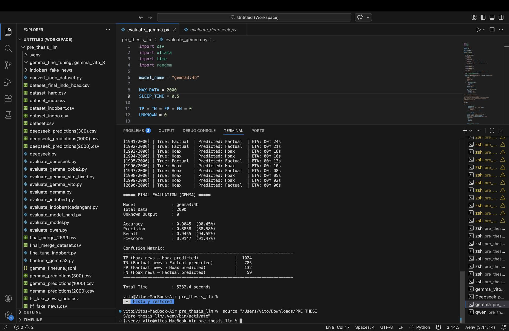
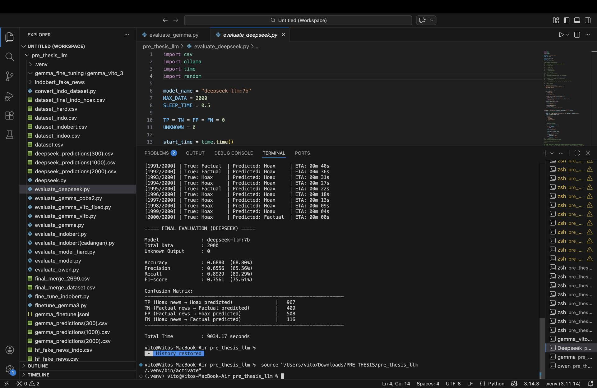
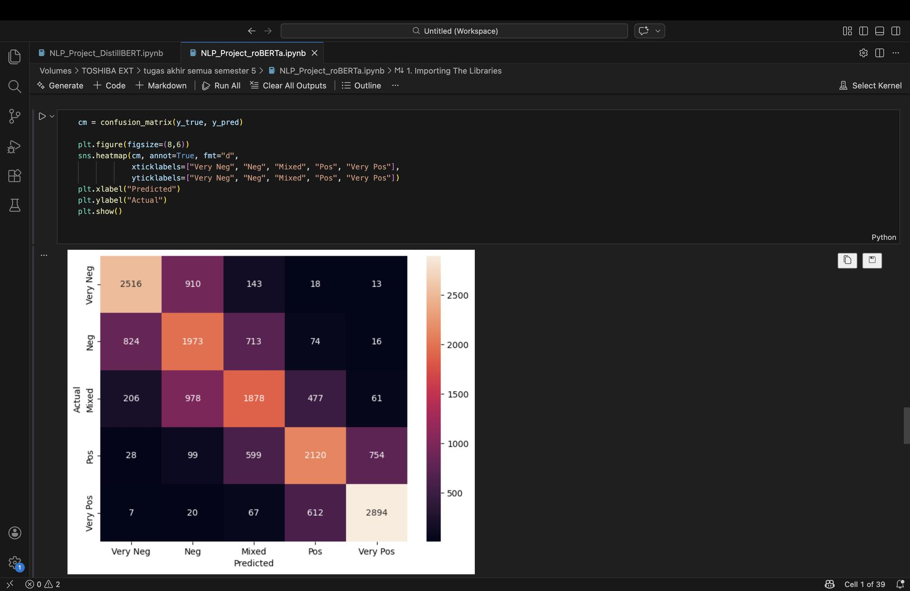
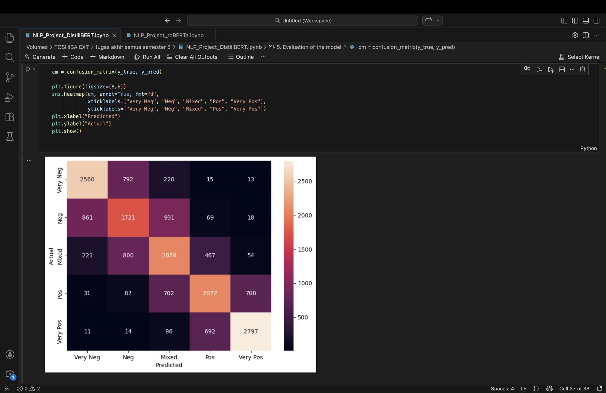
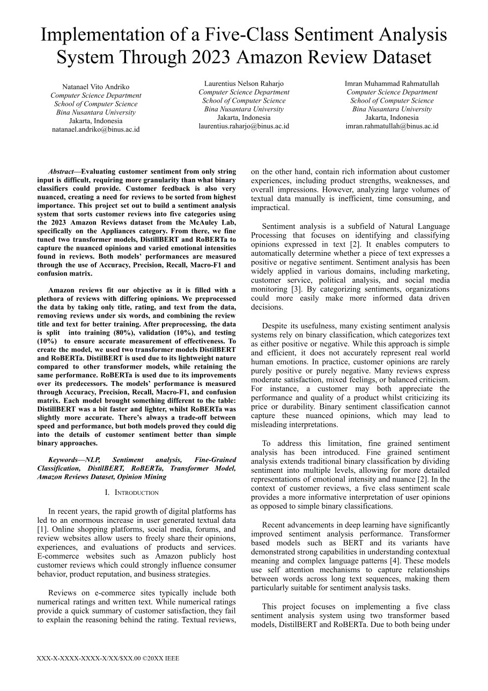
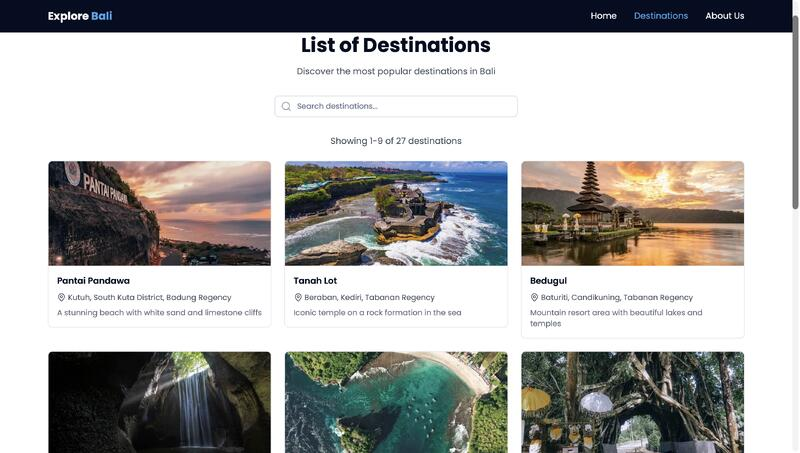
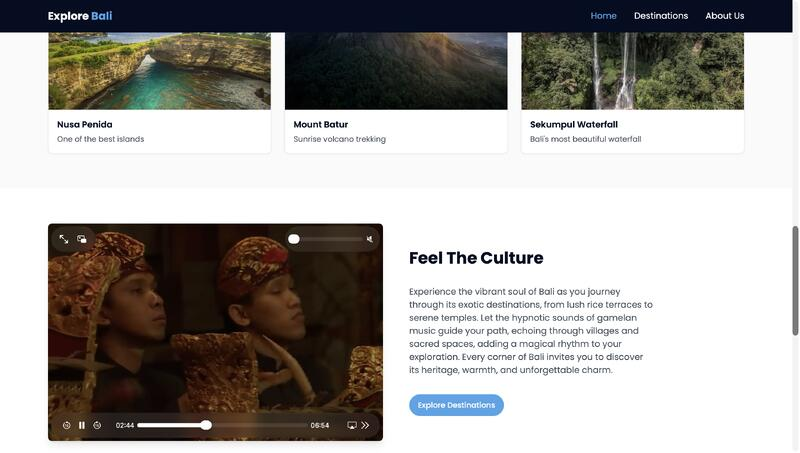
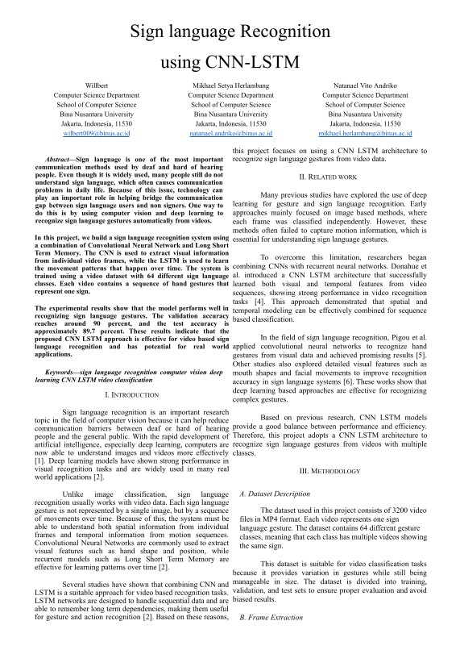
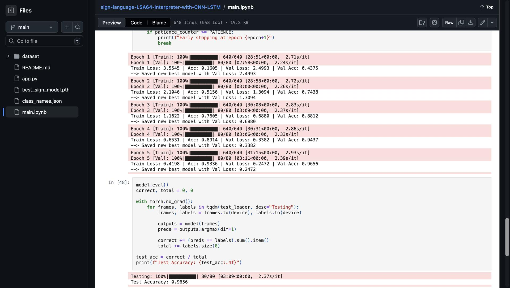

Projects


Multi-LLM Consensus for Misinformation Detection (Gemma & DeepSeek)
Conducted a comparative analysis of large language models...
Conducted a comparative analysis of large language models (Gemma and DeepSeek) to detect misinformation in textual data. Designed structured prompts to evaluate linguistic and factual inconsistencies in news statements. Compared model responses to analyze reasoning patterns, classification consistency, and reliability in identifying potentially misleading or false information.



Amazon Review Sentiment Analysis using DistilBERT and RoBERTa
This project implements a five-class sentiment analysis system...
This project implements a five-class sentiment analysis system using the Amazon Reviews dataset. Unlike traditional binary sentiment classification, this system classifies reviews into five categories: Very Negative, Negative, Mixed, Positive, and Very Positive to capture more nuanced customer opinions.
The project applies transformer-based NLP models including DistilBERT and RoBERTa for text classification. The dataset was preprocessed through noise filtering, label conversion, tokenization, and data balancing before training. Model performance was evaluated using accuracy and macro F1-score to compare the effectiveness of the transformer architectures.
GitHub: View Repository


Human Pose Estimation for Fitness Analysis
AI system for analyzing exercise posture using pose estimation...
Developed a computer vision-based system for analyzing exercise posture using human pose estimation techniques. The system detects key body joints in real time to evaluate body movement during workouts.
By identifying incorrect posture, the system helps users improve exercise form and reduce the risk of injury. This project demonstrates the application of deep learning and computer vision in fitness and health-related scenarios.


Explore Bali – Tourism Web Application
Explore Bali is a tourism web application...
Explore Bali is a tourism web application that helps users discover destinations in Bali through interactive maps, images, and multimedia content. The project was developed using Next.js, React, and Tailwind CSS to create a modern and user-friendly web experience.
Live Demo: View Website
GitHub: View Repository


Sign Language Recognition using CNN-LSTM
Deep learning system for recognizing sign language gestures from video...
Developed a deep learning based sign language recognition system using a CNN LSTM architecture to classify hand gestures from video sequences. The model uses MobileNetV2 to extract visual features from individual frames and an LSTM network to learn temporal motion patterns across video frames.
The system was trained on a dataset containing 3200 video samples across 64 sign language classes. Data preprocessing included frame extraction, resizing, normalization, and data augmentation techniques such as flipping, brightness adjustment, and rotation.
The final model achieved approximately 89.7% test accuracy, demonstrating the effectiveness of combining CNN feature extraction with temporal sequence modeling for video-based gesture recognition.
GitHub: View Repository